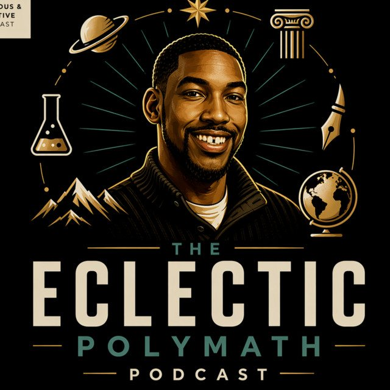

The Eclectic Polymath Podcast · Archive
#043 The Gottman Love Lab: How Relationships Became Data
About this episode
Love is usually treated as mystery, chemistry, or fate, but the Gottmans approached it as something that could be observed, measured, practiced, and repaired.
This episode traces the work of John and Julie Schwartz Gottman, from the famous Love Lab and their research into marital success and failure to frameworks like the Four Horsemen, the 5 to 1 ratio, and the Sound Relationship House.
We look at how their methods turned relationship therapy into a data-driven practice, while also exploring the critiques around prediction, statistical accuracy, demographics, and the limits of turning intimacy into a model.
Key points
- Love is usually treated as mystery, chemistry, or fate, but the Gottmans approached it as something that could be observed, measured, practiced, and repaired.
- This episode traces the work of John and Julie Schwartz Gottman, from the famous Love Lab and their research into marital success and failure to frameworks like the Four Horsemen, the 5 to 1 ratio, and the Sound Relationship House.
- We look at how their methods turned relationship therapy into a data-driven practice, while also exploring the critiques around prediction, statistical accuracy, demographics, and the limits of turning intimacy into a model.
More like this
 #218 Nicole Avant: Power, Marriage, and the Family WayOctober 17, 202650:31
#218 Nicole Avant: Power, Marriage, and the Family WayOctober 17, 202650:31
#091 Trusts and Estate Planning: Wealth, Control, and the Family ConstitutionJuly 12, 20261:03:55 #083 Black Feminism: Power, Love, and the Practice of LiberationJuly 3, 202649:35
#083 Black Feminism: Power, Love, and the Practice of LiberationJuly 3, 202649:35 #078 Sternberg’s Theory of Love: Intimacy, Passion, and CommitmentJune 30, 202643:01
#078 Sternberg’s Theory of Love: Intimacy, Passion, and CommitmentJune 30, 202643:01